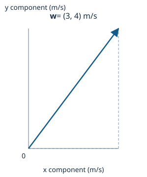
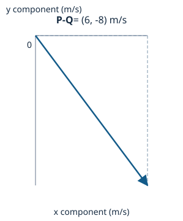
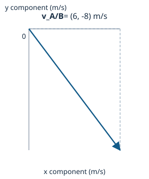

Review preview — scientific and teaching approval remains pending.
Motion in two dimensions: vector representation and subtraction; relative velocity in a plane · CORE1B
Vector representation and subtraction
Intrinsic concept difficulty: MEDIUM
Predict first: a vector has components (3, 4) m/s in an east/north frame. Before reading on, decide -- is '5 m/s' the full description of this vector, or is something still missing?
Check your prediction: '5 m/s' is only the magnitude, obtained from sqrt(3^2 + 4^2) = 5 m/s by the right-triangle bridge. It cannot by itself say whether the vector points north-east, south-west, or anywhere else -- the squaring step that produced it threw the signs away. A common wrong idea is to treat the magnitude and the vector as interchangeable once a number has been calculated. Diagnostic: two vectors, (3,4) and (4,3) m/s, have the same magnitude (5 m/s in both cases) -- do they point the same way? They do not: comparing the signed components directly shows they are different vectors. The repair is to keep the signed pair (3,4) alongside the magnitude whenever direction is asked for.

Reconstruct before checking: P = (6,0) m/s and Q = (0,8) m/s in a common east/north frame. Sketch P - Q graphically on your own, using the reverse-then-add rule, before reading further.
A frequent shortcut is to draw P and Q from the same origin and simply join their two tips in whichever order looks convenient -- this hides which observer's subtraction order is being used and is easy to reverse by accident. Diagnostic: in your sketch, which endpoint does the subtraction arrow start from -- the tip of P or the tip of Q? The correct construction reverses Q to get -Q = (0,-8) m/s, translates it to the head of P without rotating it, and draws the resultant from the tail of P to the head of the translated -Q: (6,0) + (0,-8) = (6,-8) m/s. Check your reconstruction against this and against the direct component subtraction, (6-0, 0-8) = (6,-8) m/s -- both routes must agree.
Use this to check your reconstructed subtraction: it is addition of the reversed second vector, not a shortcut between two tips drawn from the same origin.
- P: the first vector.
- Q: the second vector, same frame.
- -Q: Q reversed.
Applies when:
- P and Q are expressed along the same declared axes.
- Free vectors may be translated (not rotated) for the construction.

Relative velocity in a plane
Intrinsic concept difficulty: HARD
Predict and reconstruct: A moves at (6,0) m/s and B moves at (0,8) m/s in a common east/north frame. Which displacement carries you from B to A -- and does that mean you compute v_A - v_B or v_B - v_A for 'A relative to B'? Decide before reading on.
A common wrong route is to subtract whichever velocity is written first in the question. The repair is to reconstruct the path explicitly: draw origin -> B -> A, giving r_A = r_B + r_A/B, so r_A/B = r_A - r_B -- the same order carries through to velocities, v_A/B = v_A - v_B. Applying this: v_A/B = (6,0) - (0,8) = (6,-8) m/s, magnitude sqrt(36+64) = 10 m/s. Now explain in your own words why reversing the observer -- asking for B relative to A instead -- reverses the sign of every component, before checking the next block.
Check your reconstructed subtraction order against this relation.
- v_A: velocity of A in the common frame.
- v_B: velocity of B, same frame.
- v_A/B: velocity of A relative to B.
Applies when:
- Same observation times and a common interval.
- Parallel, nonrotating Cartesian axes.
- Classical (non-relativistic) model.

Diagnose this arrow: a classmate reverses the observer and draws B relative to A with the correct length (10 m/s) but pointing northeast instead of northwest. Is the length being correct enough to accept the answer? It is not: v_B/A = -(v_A/B) = -(6,-8) = (-6,8) m/s, which points northwest, not northeast -- a correct magnitude does not certify a correct vector. Name the observer, label both signed components, and inspect the direction before ever taking a magnitude. As a standing check, v_A/B + v_B/A must equal exactly zero for any pair of velocities.